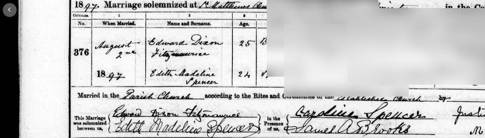
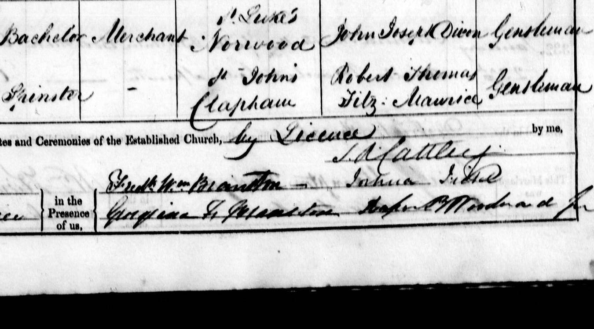

Edward Dixon's parents
Edward Dixon FitzMaurice was born on 21 October 1872 and baptised at Ward End, Aston, on 19 June 1873. The baptism names both his parents, William and Fanny Mary Fitzmaurice. His own marriage register names that father as Robert William FitzMaurice. Fanny Mary's maiden name, on the birth index and on her marriage, is Falcke.
Edward Dixon FitzMaurice

He was born on 21 October 1872 and baptised on 19 June 1873 at St Margaret's, Ward End, Aston. The register calls his father a surveyor and contractor, of Ward End, and names his mother as Fanny Mary. The birth index is the December quarter of 1872 at Aston, volume 6d, page 396, mother Falcke. In the 1881 census at Aston Manor the enumerator wrote him as Ernest Dixon, aged 8, born at Little Bromwich. In 1891 he was an apprentice civil engineer in Brighton.


On 2 August 1897, aged 25 and a professional singer, he married Edith Madeline Spencer at St Matthew's, Brixton. He was probably a civil mechanical engineer in Brixton in 1901, and in 1911 he was a civil engineer at Whitstable. He died in the West Ham district in the second quarter of 1928, aged 56, and was probably buried at Chingford Mount Cemetery on 13 June 1928.
A family photograph shows him in what may be a clerical collar. No church record has been found. The clergyman story is an unproven family tradition. He was not a son of the Earls of Orkney: the London Gazette of 23 April 1890 names the 7th Earl's surviving brother and sister, and Edward is not among them. His own children are on the brother and sisters page.
John FitzMaurice and Eliza Taylor


John FitzMaurice married Eliza Taylor by licence at St Martin's, Birmingham, on 3 February 1827. He was of His Majesty's Tower of London, a bachelor. She was of that parish, a spinster. John Taylor witnessed. He was a clerk with the Board of Ordnance: a clerk in 1827, a clerk in the Ordnance Office in 1829, and a clerk in the Tower in 1832. The family lived in Whitechapel and then in Mile End Old Town. By 1861 he was described as a gentleman. His birth, his parents and his death have not been found.
Eliza was of Birmingham. That is probably why their son Robert William later settled there. Her own birth and death have not been found.
Their three sons

William, the eldest, was born on 23 December 1827 and baptised the next day, Christmas Day, at St Mary's, Whitechapel. John was a clerk.

John Richard was baptised on 4 November 1829 at St Dunstan's, Stepney. The family were of Mile End Old Town, and John was a clerk in the Ordnance Office. The date is the baptism, not a recorded birth.

Robert William, the youngest, was baptised on 30 September 1832 at the same church. John was then a clerk in the Tower. The date is the baptism. A family history that says he was born that day is copying the baptism.
A Carlow origin, likely but not proved


A published family history places John in a Carlow branch of the FitzMaurices of Kerry. It says he was born on 6 July 1803, son of John FitzMaurice of Kelvin Grove, Killeshin, County Carlow, and Henrietta Frances Cary. The London part of that account now agrees with the registers: Eliza Taylor, the three sons, and William's date of birth. It also names a brother, Robert Thomas, as a clerk in the Ordnance Office. On 13 October 1859, at St John the Evangelist, Clapham, Robert Thomas Fitz Maurice, gentleman, is named as the father of Emma Frances when she married Samuel Dixon, a merchant. That is a real man in the same office. No record found so far says where John was born, or who his parents were. The Carlow origin is likely, and it is not yet proved. It is not drawn on the tree.
Robert William FitzMaurice
Robert William FitzMaurice

On 14 September 1861, a surveyor, he married Fanny Mary Falcke at St Mary's, Battersea. The register calls his father John a gentleman, and her father William Gottlob Falcke a manufacturer. In 1871 he was a surveyor and contractor at Little Bromwich, Aston, born in Stepney. In 1881 he was a granite merchant and contractor at Aston Manor. He died at Edgbaston on 10 May 1895, aged 64. The estate was 12,921 pounds 4 shillings and 9 pence. The executors were his widow Fanny Mary and their sons John Rupert, a quarry owner, and Walter, a contractor.
Fanny Mary Falcke
Fanny Mary FitzMaurice, nee Falcke
She was the youngest child of William Gottlob Falcke, a potter, and Elizabeth. A line in the 1871 census that gives her birthplace as France is a mistake. The baptism, the 1851 census and the 1881 census all give Battersea. She was 80 when she died at Erdington.
William Gottlob Falcke
The 1841 census says he was born in foreign parts. He married Eliza Macfarlin at St Mary's, Battersea, on 15 October 1817. On the children's baptisms she is Elizabeth. By Fanny's wedding in 1861 he was described as a manufacturer. He and Elizabeth had ten children baptised at Chelsea and Battersea between 1818 and 1837.
Elizabeth Falcke
In 1851, a widow, she was 54, born at Harrow, with the younger children still at Battersea. Her death has not been tied to a certificate.
The children at Battersea in 1841
The 1841 household lists Eliza (20), Jane (15), Charlotte (13), Elizabeth (11), Frederick (9), Emily (7) and Fanny (4). Those ages are as the census wrote them. Daughters married at Battersea: Henrietta to a Mr Nichols in 1840, Eliza Caroline to a Mr Knight in 1845, Charlotte to a Mr Cooper in 1850, and Jane to a Mr Turner in 1858.
Edward's brothers and sister
Six births name the mother as Falcke, in the King's Norton and Aston districts. They are probably Robert and Fanny's children.
- William Robert, summer 1862, King's Norton, volume 6c, page 406. He is not in the 1871 household.
- Eliza Ada, early 1864, King's Norton, volume 6c, page 466. With the family in 1871 and 1881.
- John Rupert, spring 1865, King's Norton, volume 6c, page 447. Called Rupert J. in 1871. A quarry owner, and an executor, in 1895. Died at Leicester on 21 September 1949, aged 84. The estate was 56,789 pounds 19 shillings and 2 pence.
- Arthur Percy, summer 1867, Aston, volume 6d, page 352.
- Walter, late 1869, Aston, volume 6d, page 345. A contractor, and an executor, in 1895. A Walter registered at Aston in 1872, mother Stevens, is a different family.
- Edward Dixon, born 21 October 1872, Aston, volume 6d, page 396, and baptised at Ward End on 19 June 1873.
Harry, aged 5, is in the 1871 household at Little Bromwich. His place in the family is not settled.
References for every entry are on the sources page. Street addresses are kept to the town or district.